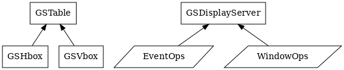

API Overview
Misc
- GSTable
The GSTable class (a GNU extension)
Description forthcoming.
- GSHbox
The GSHbox class (a GNU extension)
Description forthcoming.
- GSVbox
The GSVbox class (a GNU extension)
Description forthcoming.
- GSDisplayServer
Abstract display server class.
Description forthcoming.
- GSDisplayServer (EventOps)
Abstract display server class.
Description forthcoming.
- GSDisplayServer (WindowOps)
Abstract display server class.
Description forthcoming.